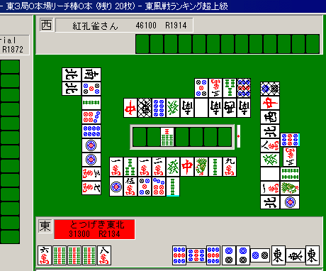
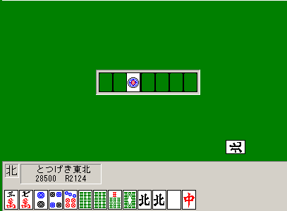
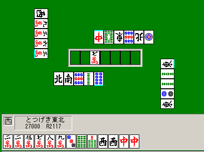
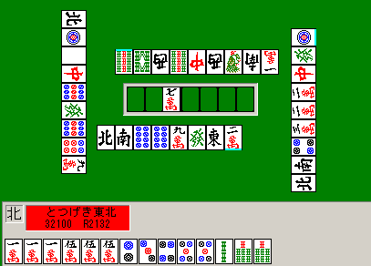
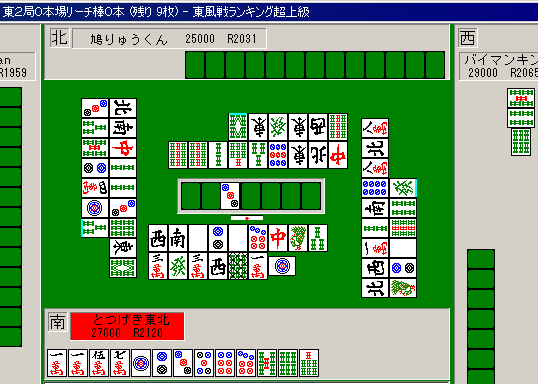
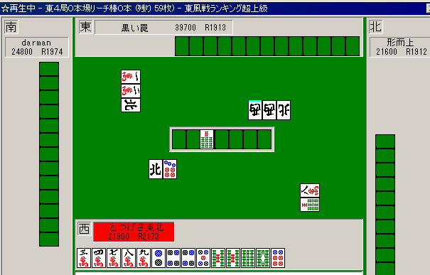
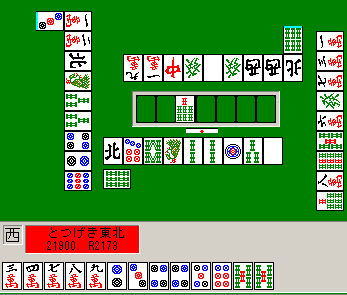
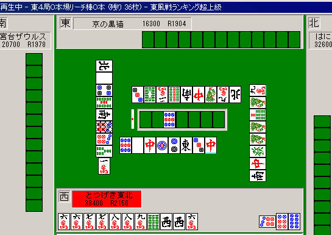

個別状況判断
講座をもとに、具体的な個別の状況について、おれが何を考えどう打ったかを正確さだけを重視して書く

最強水準の打牌：
講座に書いたことは、第一超ランで安定Ｒが2000以下のプレイヤ（すなわち、ほとんど全てのプレイヤ）にとって非常に重要なテクニックである。
麻雀界によくいる、ただの語り好きな平均的打ち手の理屈ではない。常におれが意識してそう打ち、かつ結果を残しているテクニックだ。
シスマにバイマンキンという打ち手がいるが、彼が安定Ｒを急上昇させたのは、おれが彼のデータを見て「役牌の１鳴きをやめろ」とアドバイスし、彼がそれをまじめに聞いて自分の打ち方を変えたからだ。
講座を読んだだけで、今までと変わらず漫然と打つだけで実力が上がるということはありえない。
根本的に、打ち方を変えてみろ。どうして君は「超ランによくいる普通の打ち手」で満足する？ 超ラン内偏差値75超の成績を残したければ、マジメに取り組んだ方がいい。
状況例：相手と自分のテンパイ

こういう状況ではどう打つのか？
講座に書いたね？ 「上がる気があるなら（勝負に値する手なら）、もっとも上がれる確率の高い牌で待つ」。
上家は北トイツ落としであるから降りている。トイメンもトップだしなるべく降りようとするだろう。
もし６マンがリーチ者の上がり牌であれば → 自分が上がり切るためにはツモらねばならない（他家はリーチに対して安全に降りたと仮定する）。リーチ者は６９やシャンポンだから放銃の危険まである。
もし６マンがリーチ者の上がり牌でなければ → ６マンを切るべき（８マン待ちならだいぶ上がりやすいだろう）。
これがただの白のみなら、無理せずに８マンを切ればいい。そして６ソウでも通れば９ソウアンコ落とししたらいい。
しかしここは、どうせ次に例えば５マンを引いたとしても、結局攻める状況にあるのだ。
和了できる確率が非常に低い６マン待ちのまま危険牌を何個も何個も通すのはただのバカ。和了率を下げて放銃率を上げるのは愚の骨頂だ。
ここでは放銃率を下げるつもりはない（勝負する）戦略なのだから、和了率が高まるような牌（ここでは８マン）で待つべきだ。
これは非常に重要な技術だから、よく覚えておくように。
ちなみにこの試合はトイメンから「リーチ者の現物」で８マンが出てトップになった。結果はたまたまだが、少なくとも６マン待ちにするよりはずっとずっと、そうなる確率は高い。
状況例：基本的な食い仕掛け

東１局１本場。リーチ棒１本。自風が出たところだが、どうする？
これを上がれば30000点に達する上、ドラや他の役牌のからみもある・・・わけないだろボケ。
こんなもんポンしてるから負けるんだよ（笑）
北などいつでもポンできる。
これポンして
３７ ２４７ ６６７８ 中
とかになったら、えらい不自由な人やで。
次に３ピンチーするのか？（笑） もうあがれんそれ（笑）
北見送ってしばらく待てば
３６７ ２４７７ ６６７８９ 北北
くらいの形にはすぐなるって（笑）
この程度の形にならないような「ヒキ」なら、北ポンしてても１手も進んでないって（笑）
ほれ、リーチも見えてきただろ？ 今から北２鳴きしても上がり安さかわらんだろ？
3900以上になりそうにない時、平場の子で役牌１鳴きはするな。
「バラバラだからポンして早上がりして防御」は意味ない。バラバラの時はポンしようがしまいがだいたい上がれないのだ。
そしてムダにクズ手テンパイするから、リーチかけられてもつっぱってしまって防御力が落ちるのだ（最強水準の人の打ち方を見るといい。仮に役牌１鳴きをしても親リーにのみ手でつっぱったりなどしていない）。
大丈夫。
心配しなくても、おれみたいに役牌１鳴きしない打ち手でも、和了率23％（トップ率30％超）になれるねんからヾ(´ー｀)ノ 役牌１鳴きしてるあなた、和了率23％ありますか？（笑）
トイツが３つとかあって、ポンすると劇的に上がりやすくなるなら別だが、超ランの平均的打ち手の役牌１鳴きはだいたい、ポンしても別に上がりやすくならないクソ鳴きだ。
ポンという行為が、和了率自体を引き上げる場合（ポンしないことによって高まる収入の分を打ち消すほどに）に、ポンすべきなのだ。
なお、役牌の一鳴きをひかえると自動的に和了平均点が上昇し、リーチ率も上昇し、トップ率がかなり増えると思う。
少なくともおれの「実験」ではそうだったし、シスマのバイマンキンもこの方法でトップ率と平均順位を大幅に向上させた。
（ただしメンゼンメンツ構成技術が低いと和了率が一時的に落ちてしまうかもしれない。充分に練習すること）

ただしこれくらいならポンしてもいいだろう。上に書いた「トイツが３つとかあって、ポンすると劇的に上がりやすくなる」状況だ。
中を見逃すと、西か中か片方を頭に固定しなければならなくなる可能性が強い。しかも２マンまでトイツだから極めて上がりにくい。先に１マンを引いてしまうともうクソ待ちしかできない。
中をポンすると和了できる確率が上がると考えられる。こういう場合は仮に3900が見えていなくてもポンして差し支えない。
結局、５８ソウ待ちの中ドラ３で和了。
状況例：クソ待ちでもリーチするとき

東２でほぼ平場とする。
ツモりサンアンコはクソ待ちになるが、こういうのはリーチしていい。リャンメンに切り替えても1300〜2000点ではあまり大したことはない。
リーチツモサンアンコの8000点なら、和了率の低下分（半分程度）を補う程度の価値はあるだろう。
ちなみに平場でのサンアンコやスーアンコの場合は他家がリーチしていなければダマにせずリーチしてツモを狙った方がいい。
東12は、東34（オーラス間際）に比較するとリーチのツモ和了率がだいぶ高い。

こういうリーチも別に悪くないと思う。
リーチしないと3200以下、リーチすると5200以上というようなリーチなら、待ちが変えられないならリーチして良い（リーチイーペードラ１のカンチャン待ちなども含む・・・むろんリーチピンフドラ１の方が良いが）。
流局間際で他家リーチもかかっておらず、形テン狙いの人を下ろすかまたはうまくすれば無防備なその人から上がることができ、点数的に1000点放出は痛くない。
よく流局３〜４順前にリャンメン3900などを張ってダマにする人がいるが、おれはあまり残り順目や枚数を意識せずにリーチをかける。流局間際は一発和了などがしやすいものだ。
上がりやすくするために、通常「良い牌」は序順〜中順では他家の手の中に取っておかれる。そしてテンパイに近づくにつれそれらが放出されるのが終順なのだ。
少なくとも、このせいで負けの要因になっているというようなことはないと思われる。
クソリーチするタイミングは
・ある程度高い手または親で、待ちを変えることが（順目的な理由、捨て牌的な理由、順位状況的な理由、あるいは役がらみの理由で）困難なとき。
・そこで和了しなければ順位低下などが決定的で、ある事情で当たり牌が出やすい時（２家リーチの共通スジなど）。
具体的にはイーペーコーカンチャン（リャンメンに受けられるならそうすべき）、ドラ単騎、三色（ただしピンフなど三色以外の役がある場合はリャンメン受けを目指す）などはクソ待ちでいい。
またリーチドラ１などの手で135の形が残ったが、既に場に6が３枚見えているとか、7がポンされているなどの理由があれば待ちを変えることが絶望的なので引っ掛けリーチしてしまう。
おれの平場でのリャンメン率は71％〜73％くらいであり、かなり「良い待ち」を心がけているにもかかわらず３割方クソ待ちである（そのかわりクソ待ちの時の平均和了点数は7000超と抜群に高いが）。
もちろん多くは字牌待ちやドラ単騎などだろうが、リャンメン率が85％とか行く人はたぶん、リャンメンにこだわり過ぎて損してるのではないかと思う。
状況例：オーラスの状況判断

オーラス３位。
２位になるためには3900程度が必要である。
ここでは何を切るべきか？
講座によると、「オーラスは上位と2/3程度の点差が埋まるリャンメンリーチ手ができればいい」ということだった。
もちろん確定まくり手ができればそれに越したことはないが、上がりにくい三色などをつけるのはあまり好ましくない。
この手ならリーチドラ１やリーチピンフドラ１を考えるのはもちろんのこと、リーチピンフツモ（あるいは直）やリーチピンフ裏１などを見ることが重要だ。
また、途中でタンヤオに変わることだってある。「確定したまくり手」にとらわれて６７８ソウを無理にメンツにしようとすると、大きく遅れてしまうだろう。
おれは７ソウ引きを早々に見切ってこの段階でドラを落としてしまった（笑）。
まあそれはさすがにミスだが（４メンツ候補がリャンメンであるので、５ソウ切りなどでいい）、しかしこの場面で７ソウツモにかけるような打ち方は極めてよくないだろう。
例えばドラが誰かにポンされたら、もうドラを使うことは７ソウツモを絶対に必要とするわけだから、そうなったら７ソウ受けよりも広いリャンメンを作ることを心がける。
何よりよくないのは、こういう手で確定を目指すあまりピンフもつかずリーチドラ１のような手になってしまうことだ（それならリーチピンフの方がよっぽどいい）。
またもう一つこの場面から重要なことがある。

このようにピンフテンパイしたが、点数状況をどう見るだろうか。
リーチするとリーチ棒で４位になる。しかも裏などが乗らなければ上がっても３位のままである。ということは・・・リーチしない？
これも状況判断技術論の、「順位を考えよう」に書いたとおりだが、あまりシビアに（確定情報だけを細かく）考えてはいけない。
これは裏やツモに期待することを忘れて確定手を作ろうとしてしまうこと（確定した情報だけを細かく計算すること）と同じで、大抵の場合不利になってしまう。
適当にリーチしとけば、ツモったり裏が乗ったり直ったりできるもんだ。実際そうした条件で逆転できる場合、和了の50％近くは逆転できる。また裏が乗らなくても、先制でリャンメンリーチできればそうそう損するようなことはない。あったとしても、得する分の方がよっぽど多い。
また他にも考えられるのは、他家がベタオリして流局し、さらに上位との点差が縮まることだ。とにかく、確定情報だけを追っていると終盤強さが高くならないので充分注意しよう。
先制リャンメンリーチすれば追っかけが入っても５割方上がれるわけだから、順位上昇にかけてリーチしてしまって問題ない。
ここで仮にトップが２フーロしていたとしても、リーチしてもそんなに不利ではないと考えよう。
（それは現在３位で、リーチして他家に上がられても１位しか低下しないからである。もし現在２位で、リーチしたら４位というような場合はかなり考えどころだが。ちなみにこの状態が自分が２位で、かつ役なしリャンメンテンパイであれば、リーチ棒で４位に下がろうとおれはリーチする。トップが２鳴きしてるならダマにすると思う）
なおこの手はリーチピンフ裏２で和了し当初の目的通り２位をまくった。
ただし、裏２乗っても逆転できない、一発ツモでも逆転できない、直撃して裏１でも逆転できない、というような大差の場合はダマにするべき（笑）。
裏１＋直撃あたりまでは期待できると考えていて良い。
状況例：オーラスの状況判断

こちらもオーラス。
トップだったのでカンチャンを食いつつ、「つかめばほぼ出る」西ポンを待っていたらリーチがかかった。そしてその瞬間テンパイ。
ここでは西を切って降りた。
ドラが１ピンであり、確定マンガンまではなさそうだが（そのようになる状況は少ないが）、裏や一発を含めれば充分にあり得る。
マンガンさえ振らず、リーチ者が上がればほとんど確実にトップだと思われるため、無理に自力で上がらなくてもよい。しかも６ソウで振ると半々程度の確率で２位以下になってしまう。
攻めるメリットがほとんどない。
なお、こういう状況から降りていたら、２位の人が追っかけリーチをかけ、結局トップをまくられたという経験もあるだろう。そういうことが何度か続いて起こることもあるだろう。
だが、そこで短絡的に打ち方を変えてしまうのが弱い人なのだ。
そういう人は決して長期的視点で「強い打ち方」を探していくようなことができず、一時期強くなったり、また少しすると弱くなったりを繰り返し、結局どの打ち方がもっともふさわしいかを知ることはない。
永遠に、安定した強さを得ることができない。「安定した強さ」と言ったが、実はそれこそが強さなのだ。
安定した強さを持っている人は、そうでない人よりＲが短期間で上昇するし、最高Ｒも高くなるし、もちろん安定Ｒや総得点も高くなる。
別に「不安定だからその分、まとまって勝てる」ようなことはない（笑）。安定しない強さは安定した強さよりも、同じ水準なら必ず弱いのである。
まあともかく、なぜここで２位の追っかけを怖がらなくて良いかを説明する。
攻めた時のメリットは２位の追っかけにやられなくなることである。
デメリットは、少なく見積もって1/3程度の確率で２位に転落することである。
２位が、３位のリーチをかいくぐり、追っかけリーチをかけ、かつ和了し、しかも5200以上の点数を取れるという状況が、ここから1/3以上の確率で生起しそうだろうか？
今すぐ追っかけできても、和了率だけでも50％程度にしかならないだろう。というより、上に書いたようなことが1/3以上の確率でできるような人は、オーラスを２位などで迎えることはないだろう（笑）。
理詰めではないにしても、「明らかに」そういう状況が少ないことはわかる。
「ここでの勝負は、無理に上がりを目指さず３位の和了を待つ方がトップになる状況数が圧倒的に多い」という判断のもと、ここはベタオリするのだ。
（ちなみにこの手はメンピン裏１だったが）
ちなみにオーラスの状況判断で、ドラが端牌などの場合、一発さえ避けていれば、基本的にマンガン程度止まりだと考えていい。
リーチピンフタンヤオ裏２くらいまで以上は考えなくて良いということだ。
おれはしばしばオーラストップから、マンガンまでを覚悟してわざと放銃してトップを守ることがある。
親の追っかけリーチが入ったりすると怖いし、オーラスではそういうことが少ないわけではないからだ。
差し込みまではいかなくても、例えば２家リーチがかかったときに、「こっちのマンガンなら２位だがこっちのマンガンなら３位になる」などのことをぜひともよく把握しておくべきだ。
ハネマンになると３位低下、などの事情があれば念のために指し込みは控えたりするが、今までのところ、差し込みをしてとくに大きく失敗したようなことはない。